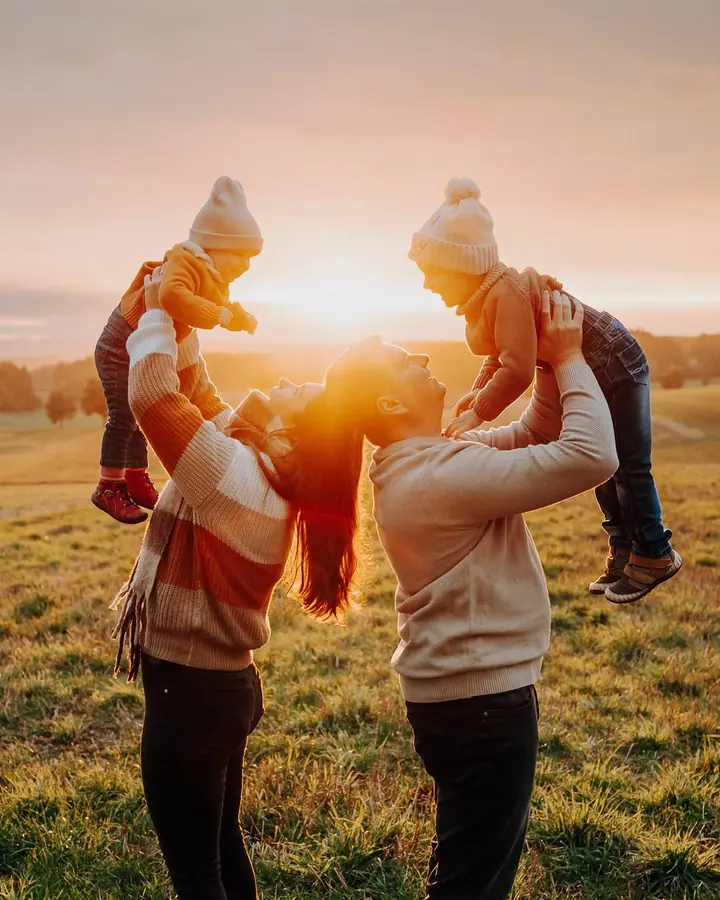
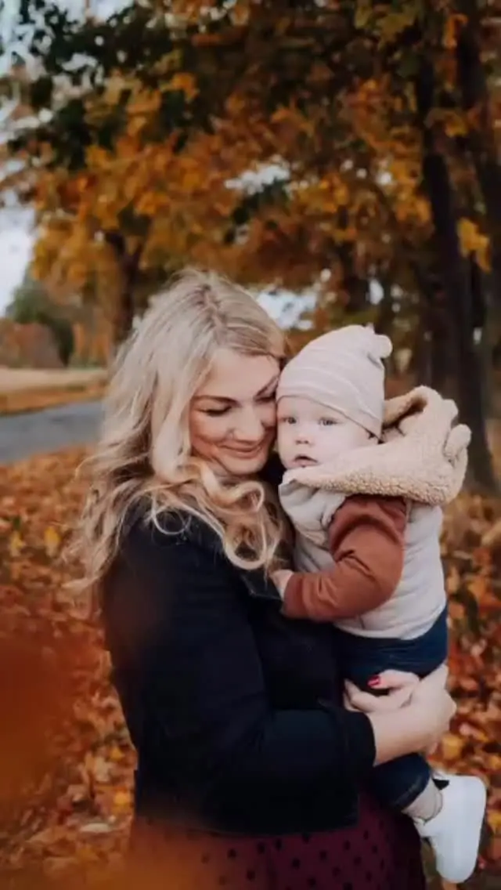
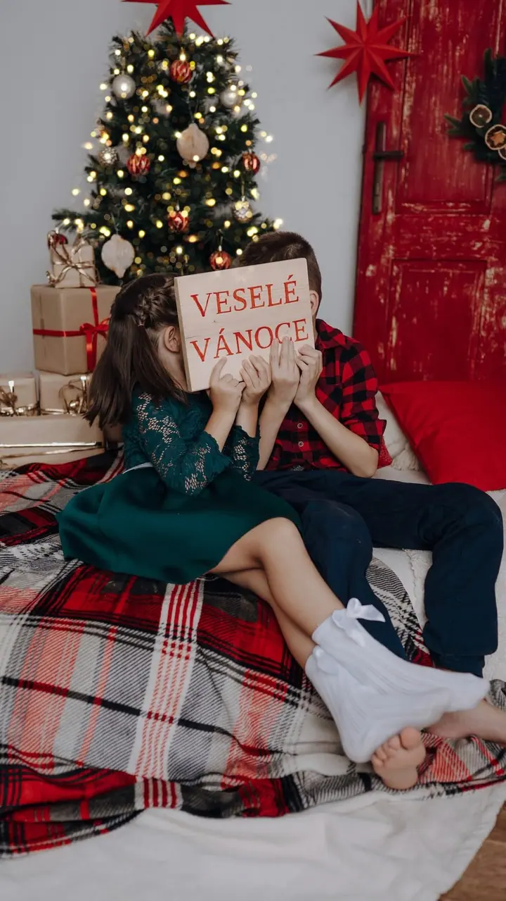

Miminka a newborn
Miminko vám nafotím už v porodnici (Fresh 48), lifestylově u vás doma nebo jako klasické newborn ve stylizovaných pózách. Lifestylové focení zachytí ty nejintimnější chvíle, newborn se soustředí na detaily vašeho drobečka.

Jmenuji se Magda Augustová a jsem fotografka ze Žďáru nad Sázavou. Fotím převážně miminka, v porodnici, u vás doma nebo jako klasické newborn, a také celé rodiny venku n…
Rezervovat termínFotím už více než deset let a stále investuji do vzdělání. Sleduji trendy, ale nejdůležitější je pro mě nadčasová fotka, která vás i po letech vrátí na to dané místo. Mám ráda lidskou přirozenost a osobitost, proto při úpravách neměním proporce ani vrásky.


Jsem empatická a během focení nespěchám. Dětem dám čas, aby se rozkoukaly, a netlačím je do ničeho, co jim není příjemné. To platí i o tatíncích. Venku se spolu vydáme na procházku, v ateliéru mám zase postel, na které si děti můžou zaskákat. Výsledkem jsou upřímné úsměvy, žádný strohý sýýýr.
Na svatbách jsem tichý pozorovatel, který dokumentuje váš den. Sama jsem věřící, takže se v kostele umím pohybovat nenápadně, a stejně tak při civilním obřadu. Ráda vám poradím s harmonogramem a při novomanželském focení vás povedu tak, abyste se cítili dobře.
Co fotím
Miminko vám nafotím už v porodnici (Fresh 48), lifestylově u vás doma nebo jako klasické newborn ve stylizovaných pózách. Lifestylové focení zachytí ty nejintimnější chvíle, newborn se soustředí na detaily vašeho drobečka.
Fotím hlavně v přírodě kolem Žďáru nad Sázavou, ale také u vás doma nebo v mém útulném ateliéru. Styl je přirozený a uvolněný, žádné strojené pózy, jen vy takoví, jací skutečně jste.
Jemné fotky v přírodě nebo v interiéru, které vám uchovají vzpomínku na chvíle plné očekávání. Ráda nafotím vás samotnou i s partnerem.
Svatby fotím převážně na Vysočině, ale ráda přijedu i dál. Nabízím několik balíčků, ať plánujete malou svatbu, nebo chcete mít nafocený celý svatební den.
Postup
Napište mi, jakou fotku si představujete a kde. Po rezervaci termínu vám pošlu průvodce focením se vším důležitým.
V průvodci najdete tipy na barevné sladění a co si vzít s sebou. Když si nebudete vědět rady, vše spolu zkonzultujeme.
Venku fotím nejraději v podvečer před západem slunce, kdy jsou barvy krásně teplé. Povedu vás, takže se nemusíte bát, že nebudete vědět, co dělat.
Do tří týdnů dostanete náhledy, ze kterých si vyberete fotky na úpravu. Hotové fotografie máte do tří týdnů od odeslání výběru.
Otázky
Nejčastěji v přírodě v okolí Žďáru nad Sázavou, dále u vás doma nebo v mém ateliéru. Za nepříznivého počasí můžeme fotit v interiéru nebo termín přesunout.
Nemusíte se s dětmi nikam vypravovat a děti jsou tam, kde se cítí dobře. Jsou spokojenější a méně ostýchavé, a klid a pohoda mají velký vliv na výsledek.
Balíček s 10 fotografiemi stojí 3 300 Kč, s 25 fotografiemi 4 800 Kč a balíček se všemi nejlepšími záběry (50+ fotek) 6 600 Kč. Mimo okolí Žďáru účtuji 10 Kč/km. Svatební obřad nafotím od 10 900 Kč.
Neupravená fotka je polotovar. Úprava je druhá půlka mé práce: ořez, kontrast, jas, barvy a drobnosti jako škrábance nebo modřinky. Proporce ani vrásky ale neupravuji.